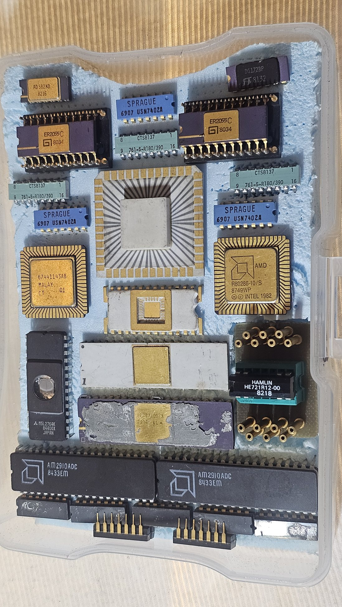

Second and Failing

Old electronics, pulled back from the scrap pile and sorted by hand. What turns up next is anybody's guess.
On the bench right now
A one-time arcade repair lot. It came out of a single find.
61 lots, sold together: 48 Mitsubishi M5L2764K windowed EPROMs, 97 Rockwell R8040P in rails, gold-pin Hitachi 74LS rails, a Zilog Z80 set, bulk 74-series TTL, and 318 card-edge and PCB connectors (3M, Amphenol, Sullins, ITT Cannon). Mostly new old stock.
What's in the photos is what ships. Rails and small lots are hand counted; big bags are careful estimates, rounded down.
See it on eBay

Jason Dinger
secondandfailing@gmail.com
Eastern Oregon